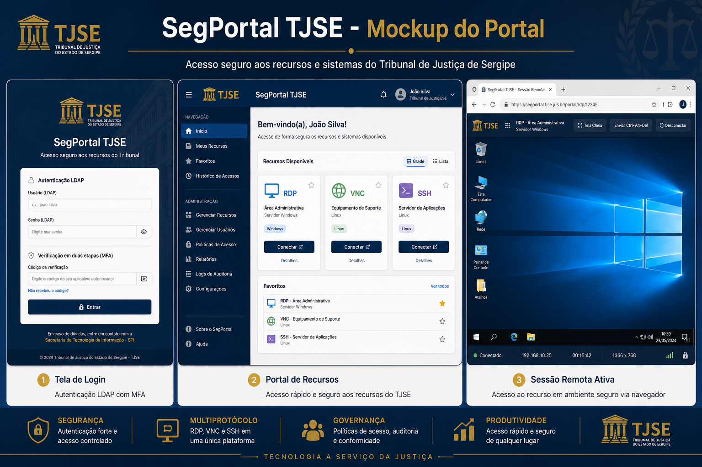
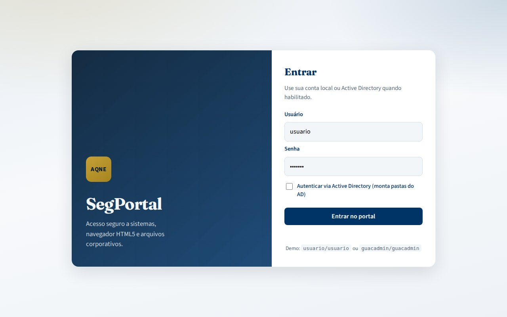
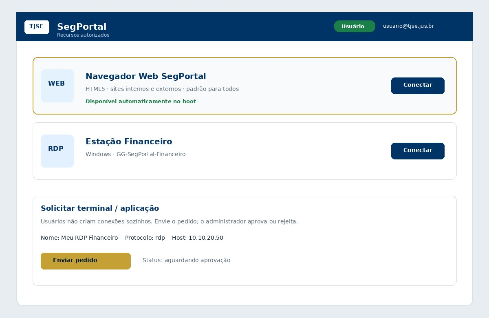
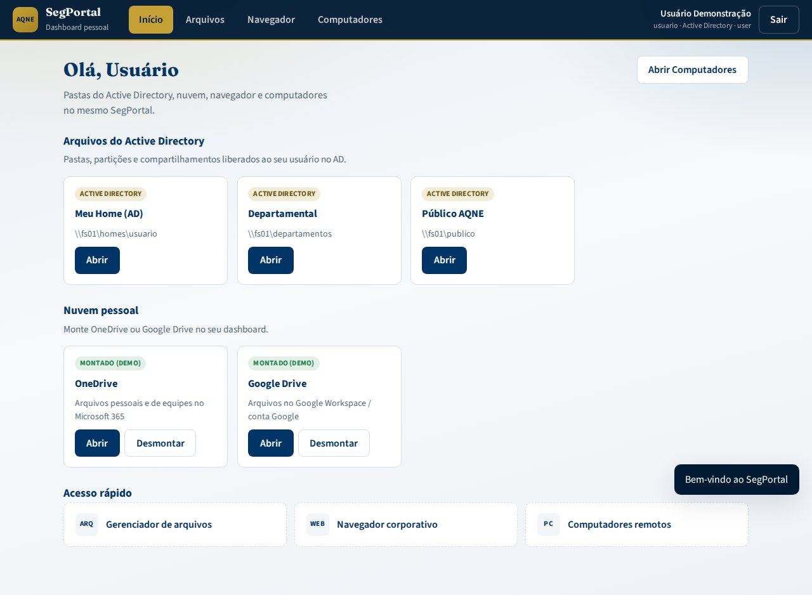
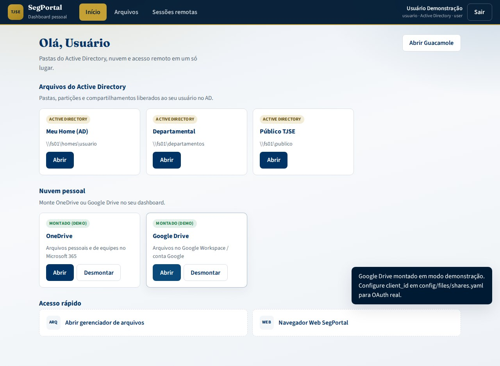
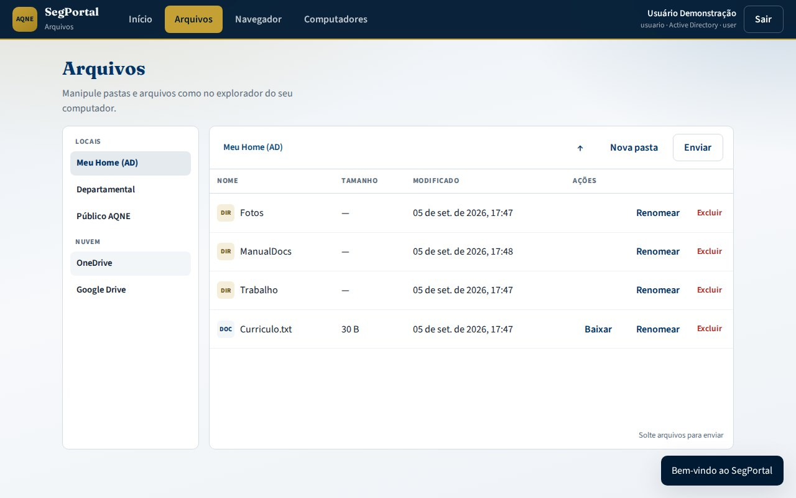
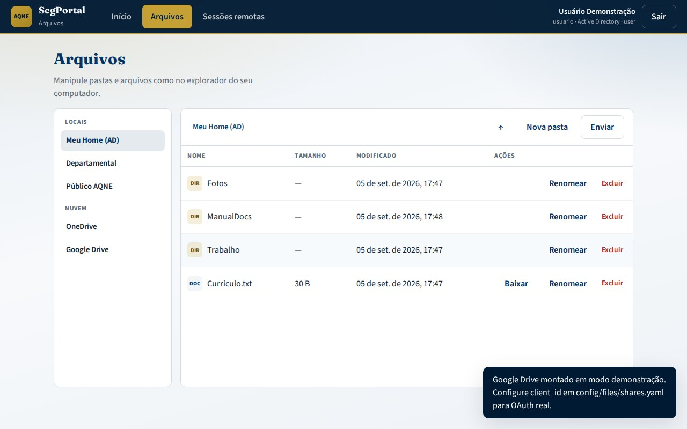
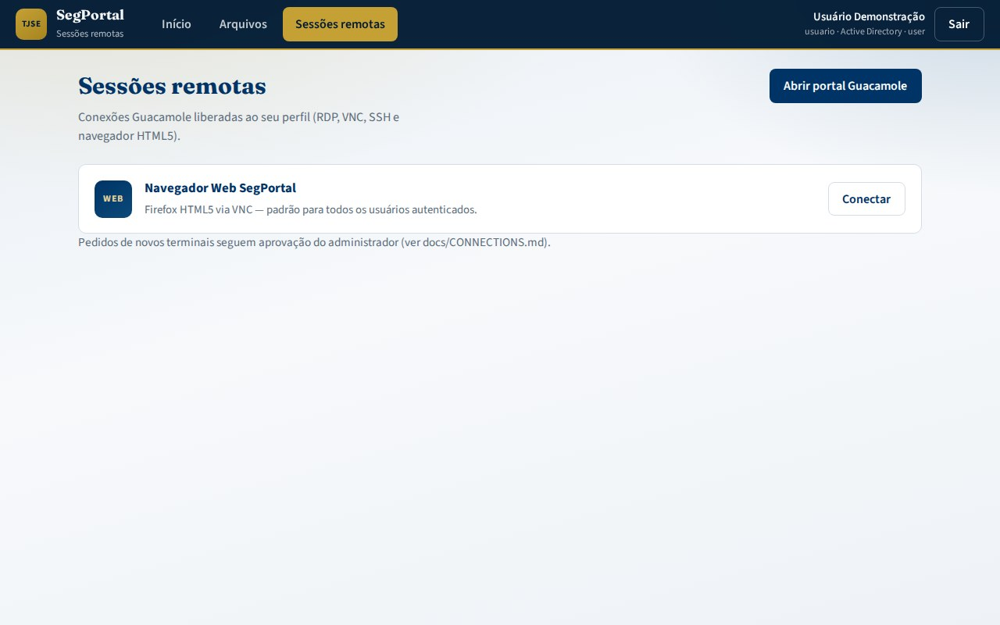
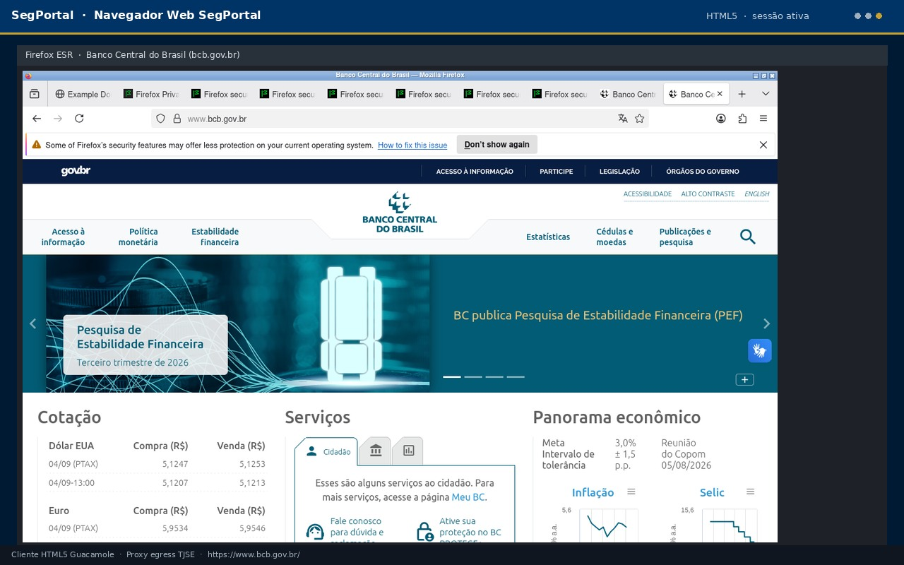
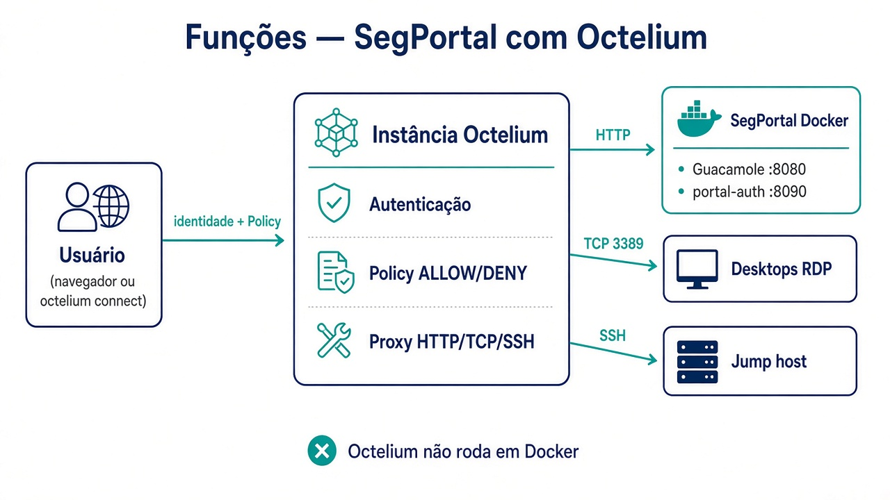

Portal de acesso seguro do Tribunal de Justiça de Sergipe.
Entre pelo navegador, abra arquivos corporativos e nuvem pessoal,
e use sessões remotas sem instalar VPN.
O SegPortal substitui a VPN tradicional por um portal no navegador.
Depois de autenticar, você pode:
abrir pastas do Active Directory (home, departamental, público);
montar OneDrive e Google Drive;
enviar, baixar e organizar arquivos;
abrir o Navegador Web SegPortal (Firefox HTML5);
usar desktops e terminais remotos (RDP, VNC, SSH) liberados pelo administrador.

Visão geral: login, dashboard, sessão remota e painel administrativo.
Função
Onde
Para quê
Login local ou Active Directory
Dashboard
Autenticar e liberar pastas do AD
Arquivos corporativos
Início → Arquivos do AD
Trabalhar em compartilhamentos liberados
Nuvem pessoal
Início → Nuvem
OneDrive / Google Drive
Sessões remotas
Aba Sessões / Guacamole
Navegador HTML5, RDP, VNC, SSH
2. Como entrar
Abra o navegador (Chrome, Edge ou Firefox atualizado).
Acesse a URL institucional do SegPortal informada pela TI.
Em laboratório local: http://localhost:8090.
Informe usuário e senha.
Se for conta de domínio, marque Autenticar via Active Directory.
Clique em Entrar no portal.

Tela de login do dashboard pessoal.
Contas de demonstração (ambiente de testes):
usuário padrão usuario / usuario ·
administrador guacadmin / guacadmin.
Em produção use apenas a sua conta institucional.
Se o MFA (segunda autenticação) estiver ligado nas sessões remotas,
o Guacamole pedirá o código do autenticador ou do token RADIUS depois do login.
3. Dashboard pessoal
Após o login você vê quatro áreas principais:
Arquivos do Active Directory — home, departamental e público.
Nuvem pessoal — OneDrive e Google Drive.
Acesso rápido — atalhos para arquivos e para o navegador web.
Abrir Guacamole — portal de sessões remotas.

Dashboard com pastas, nuvem e atalhos.
3.1 Abrir uma pasta do AD
No cartão desejado (ex.: Meu Home), clique em Abrir.
O SegPortal abre a aba Arquivos com o conteúdo da pasta.

Cartões de pastas do Active Directory no início.
3.2 Montar OneDrive ou Google Drive
Em Nuvem pessoal, clique em Montar.
Autorize o acesso na tela do provedor (quando OAuth estiver configurado).
Depois use Abrir ou a seção Nuvem na aba Arquivos.

OneDrive ou Google Drive montados no dashboard.
Sem OAuth configurado, o ambiente de demonstração usa pastas de exemplo.
Isso é esperado em laboratório.
4. Gerenciador de arquivos

Lista de arquivos com locais corporativos e nuvem.
Ação
Como fazer
Entrar em pasta
Clique no nome da pasta
Voltar
Botão ↑
Nova pasta
Nova pasta → digite o nome
Enviar
Enviar ou arraste os arquivos
Baixar
Baixar na linha do arquivo
Renomear
Renomear → confirme o novo nome
Excluir
Excluir → confirme

Exemplo de pasta criada no gerenciador.
Pastas somente leitura (ex.: público) não aceitam envio nem exclusão.
O tamanho máximo de upload costuma ser 100 MB, salvo orientação da TI.
5. Sessões remotas
Abra a aba Sessões remotas ou clique em Abrir Guacamole.
Conecte no Navegador Web SegPortal — disponível para todos os usuários.
Use esse navegador para sites que exigem IP institucional (ex.: Bacen).
Desktops RDP/VNC/SSH aparecem somente se o administrador liberar o seu acesso.

Lista de conexões disponíveis no portal.

Navegador HTML5 do SegPortal acessando o site do Bacen.
Prefira o Navegador Web SegPortal em vez do navegador do seu computador
quando o sistema externo exigir o IP do tribunal.
6. Acesso pela borda ZTNA (Octelium)
Em alguns ambientes o SegPortal fica atrás do Octelium.
Nesse caso você não abre o portal pela internet aberta: primeiro autentica
no Cluster e só então chega ao dashboard ou às sessões.

O Octelium autentica, aplica a política e encaminha ao SegPortal.
Abra a URL fornecida pela TI, no formato
https://segportal.<domínio-do-cluster>
ou https://portal-auth.<domínio-do-cluster>.
Faça login no portal do Octelium com a identidade corporativa.
Se a política permitir, o navegador abre o SegPortal normalmente.
Desktops RDP/SSH protegidos podem exigir o cliente
octelium connect — a TI orienta quando isso for necessário.
Sem identidade válida o acesso é negado (resposta 401).
Isso é o comportamento esperado da borda Zero Trust.
7. Boas práticas de segurança
Encerre a sessão e use Sair ao terminar o expediente.
Não compartilhe senha nem deixe a sessão aberta em computador público.
Não fotografe nem encaminhe dados sensíveis por canais não oficiais.
Use o navegador do SegPortal para sistemas que exigem IP institucional.
Em dúvida sobre permissão de pasta ou conexão, fale com o suporte / Nuvem TJSE.
8. Problemas comuns
Sintoma
O que tentar
Login inválido
Confira Caps Lock e se a conta é local ou de domínio
Nenhuma pasta do AD
Marque Active Directory no login; peça liberação ao administrador
Montar nuvem não abre OAuth
Ambiente pode estar em modo demonstração — confirme com a TI
Não envia arquivo
Pasta somente leitura ou arquivo acima do limite de tamanho
Guacamole / sessão não abre
Recarregue a página; se persistir, informe a TI
Erro 401 na URL do Octelium
Faça login no Cluster antes; peça o IdentityProvider correto à TI
Aviso de certificado no laboratório
Esperado com certificado de teste; em produção use o certificado institucional